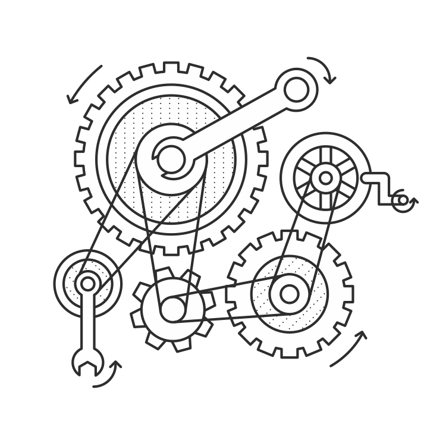

配置
原文地址:https://exploreflask.com/configuration.html

当你正在学习Flask时，配置看起来很简单。你只需要在config.py中定义一些变量所以工作就完成了。当你不得不为了生产环境的应用管理配置时，这简单就开始消失了。你可能需要保护你的密钥或者在不同的环境下使用不同的配置（例如开发和生产环境）。在这一章我们将介绍一些Flask先进的功能来更简单的管理配置。
简单的情况
一个简单的应用可能不需要任何复杂的功能。你可能只需要放置config.py在你代码库的根目录下并且在app.py或者yourapp/__init__.py中加载它。
这个config.py问卷需要每行包含一个变量赋值。当你的app初始化后，这些在config.py中的变量用于配置Flask并且它们增加通过app.config字典的访问方式。例如app.config["DEBUG"]。
1 | # app.py or app/__init__.py |
| 变量 | 描述 |
|---|---|
DEBUG |
todo… |
SECRET_KEY |
todo… |
BCRYPT_LEVEL |
todo… |
！警告
请确定在生产环境下`DEBUG`设置为`False`。不然将会允许用户在你的服务器上运行任何Python代码。
实例文件夹
有时你需要定义包含敏感信息的配置变量。我们想将这些变量从config.py分离出来并且将他们保存在代码库之外。你可能要隐藏保密的东西比如数据库密码和API密钥或者给机器定义详细的变量。为了让这容易，Flask给我们提供了一个叫实例文件夹的功能。实例文件夹是代码库根目录的子目录并且为这个应用实例包含了一个特殊的配置文件。我们不想在版本控制中提交它。
1 | config.py |
使用实例文件夹
为了加载来自实例文件夹的配置变量，我们使用app.config.from_pyfile()。当我们创建我们的应用并用Flask()调用时，如果我们设置instance_relative_config=True，app.config.from_pyfile()将会通过instance/directory加载指定的文件。
1 | # app.py or app/__init__.py |
密钥
实例文件夹的私有本质为定义密钥而不想暴露在版本库中提供了很好的候选。这些可能包含你应用的密钥或者第三方API的密钥。如果你的应用是开源的这尤其重要或者也许会在未来某一时刻开源。我们通常想让其他用户或者贡献者使用他们自己的密钥。
1 | # instance/config.py |
较小的环境基础配置
如果你的生产环境和开发环境之间的不同很小，你可能想使用你的实例文件夹处理配置的改变。定义在instance/config.py文件中的变量能够覆盖config.py中的变量。你只需要在app.config.from_object()之后调用app.config.from_pyfile()。利用这个方法是改变你的应用在不同机器配置的一种方式。
1 | # config.py |
在生产中，我们将离开列表中的值，在instance/config.py之外，并且它将会回落到config.py定义的值。
配置基于环境变量
实例文件夹不应该在版本控制中。这意味着你将无法跟踪你实例配置的变化。这可能对于一两个值来说不是问题，但是如果你在不同环境中（生产、升级、开发等）有微调的配置，你不想冒险失去这些。
Flask给我们基于环境变量的值去选择一个配置文件来加载的能力。这意味着我们能有多个配置文件在我们的代码库中并且总是加载正确的那个。每次我们有几个不同的配置文件，我们能够移动他们到他们自己的config目录中。
1 | requirements.txt |
在这个列表中我们有少量不同的配置文件。
| 文件 | 介绍 |
|---|---|
config/default.py |
… |
config/development.py |
… |
config/production.py |
… |
config/staging.py |
… |
为了决定加载哪个配置文件，我们将调用app.config.from_envvar()。
1 | # yourapp/__init__.py |
环境变量的值应该是配置文件的绝对路径。
我们如何设置这个环境变量，取决于我们的应用正在运行的平台。如果我们运行在一个普通的Linux服务器上，我们能够设置一个shell脚本来设置我们的环境变量并且运行run.py。
1 | # start.sh |
start.sh在每个环境中是唯一的，所以它应该离开版本控制。在Herok中，我们想要使用Heroku工具设置环境变量。相同的思路应用于其他PaaS平台上。
总结
- 一个简单的应用可能只需要一个配置文件：
config.py。 - 实例文件夹能够帮助我们隐藏保密的配置值。
- 实例文件夹能够用于应用的配置之后为了特定的环境。
- 我们应该使用环境变量并且为更复杂的基于环境的配置使用
app,config.from_envvar()。